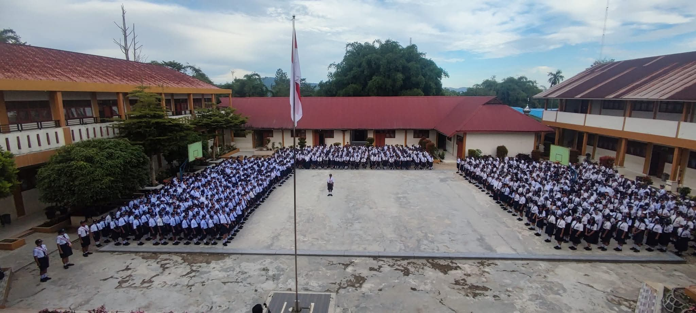

Akreditasi
SMP Negeri 1 Sidikalang telah meraih akreditasi A dari Badan Akreditasi Nasional (BAN-SM) dengan nilai 94/100 berdasarkan penilaian pada tahun 2021. Peringkat akreditasi ini menunjukkan bahwa sekolah tersebut telah memenuhi standar kualitas pendidikan yang tinggi dan konsisten dalam meningkatkan mutu layanan pendidikan. Dengan demikian, SMP Negeri 1 Sidikalang menjadi pilihan yang tepat bagi siswa yang mencari lingkungan pendidikan yang berkualitas.
Proses akreditasi sendiri melibatkan evaluasi menyeluruh terhadap berbagai aspek sekolah, termasuk kurikulum, tenaga pendidik, fasilitas, serta manajemen sekolah. Dengan status akreditasi A, SMP Negeri 1 Sidikalang menunjukkan kemampuan untuk memberikan pendidikan yang bermutu dan sesuai dengan standar nasional. Sekolah ini juga terus berupaya meningkatkan kualitas pendidikannya melalui berbagai program dan inovasi.
Dengan status akreditasi yang unggul, SMP Negeri 1 Sidikalang siap memberikan pendidikan yang berkualitas dan mempersiapkan siswa untuk menjadi generasi penerus yang cerdas, kreatif, dan inovatif. Sekolah ini berkomitmen untuk terus meningkatkan mutu pendidikan dan memberikan pengalaman belajar yang bermakna bagi siswa, sehingga mereka dapat mencapai potensi maksimalnya dan menjadi warga negara yang bertanggung jawab dan berdaya saing tinggi di masa depan.